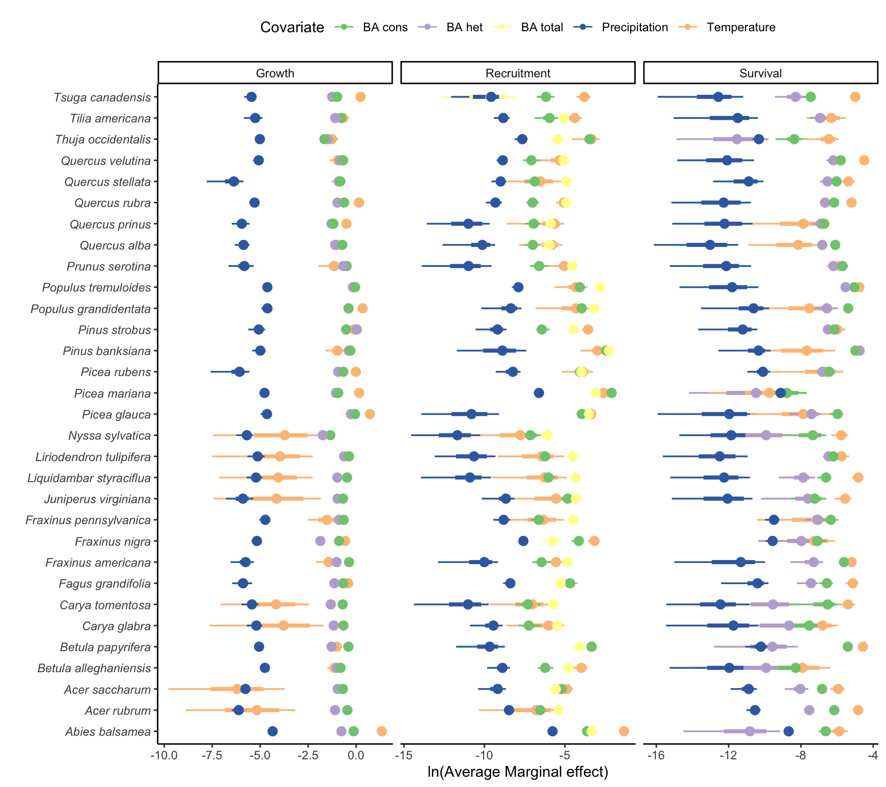

13 Average Marginal Effect
In this section, we assess the impact of individual covariates on the growth, survival, and recruitment models. We employ the Average Marginal Effect (AME) to summarize the overall effect size of each covariate \(x\) on the response \(y\) across the dataset. For instance, we can use the AME to measure the relative effect of competition and climate on the survival function. In practice, the AME is estimated using partial derivatives. This involves evaluating the model’s output when one covariate is perturbed while keeping the others constant. To perturb each covariate \(x\), we begin by normalizing it within the range of \([0-1]\) using all observations across the 31 species as follows:
\[ x' = \frac{x - \text{min}(x)}{\text{max}(x) - \text{min}(x)} \]
where \(x'\) is the normalized vector of values for the covariate \(x\). We then increase the normalized values by a perturbation size \(p\) before transforming it back to the original scale:
\[ \begin{align*} &x_{\epsilon} = (x' + p) (\text{max}(x) -\text{min}(x)) + \text{min(x)} \\ &h = x_{\epsilon} - x \end{align*} \]
Where \(x_{\epsilon}\) is the perturbed covariate in its original scale and \(p\) is the perturbation size set to 0.01. For each covariate \(x\), the average marginal effect (AME) across all observations \(i\) is estimated as follows:
\[ AME = \frac{1}{n} \sum_{i=1}^n \frac{\mid f(x_i + h, z_i, \theta) - f(x_i, z_i, \theta) \mid}{h} \]
\(f\) denotes one of the growth, survival, or recruitment demographic models, \(z\) the remaining covariates retained at their original values, and \(\theta\) is the collection of parameters. This approach is valuable because it captures the locally linearized effect of each observation. Furthermore, computing the average effect across the observed dataset considers the diversity in the distribution of each covariate, giving more weight to regions where observations are more prevalent.
AME per species
